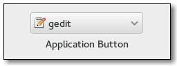

Gtk.AppChooserButton
Example
Methods
| Inherited: | Gtk.ComboBox (40), Gtk.Bin (1), Gtk.Container (27), Gtk.Widget (256), GObject.Object (33), Gtk.Buildable (10), Gtk.CellEditable (3), Gtk.CellLayout (9), Gtk.AppChooser (3) |
|---|
| static | new(content_type) |
| append_custom_item(name, label, icon) | |
| append_separator() | |
| get_heading() | |
| get_show_default_item() | |
| get_show_dialog_item() | |
| set_active_custom_item(name) | |
| set_heading(heading) | |
| set_show_default_item(setting) | |
| set_show_dialog_item(setting) |
Virtual Methods
| Inherited: | Gtk.ComboBox (2), Gtk.Container (10), Gtk.Widget (82), GObject.Object (7), Gtk.Buildable (10), Gtk.CellEditable (3), Gtk.CellLayout (9) |
|---|
| do_custom_item_activated(item_name) |
Properties
| Inherited: | Gtk.ComboBox (17), Gtk.Container (3), Gtk.Widget (38), Gtk.CellEditable (1), Gtk.AppChooser (1) |
|---|
| Name | Type | Flags | Short Description |
|---|---|---|---|
| heading | str | r/w | The text to show at the top of the dialog |
| show-default-item | bool | r/w/c | Whether the combobox should show the default application on top |
| show-dialog-item | bool | r/w/c | Whether the combobox should include an item that triggers a Gtk.AppChooserDialog |
Style Properties
| Inherited: | Gtk.ComboBox (4), Gtk.Widget (17) |
|---|
Signals
| Inherited: | Gtk.ComboBox (5), Gtk.Container (4), Gtk.Widget (69), GObject.Object (1), Gtk.CellEditable (2) |
|---|
| Name | Short Description |
|---|---|
| custom-item-activated | Emitted when a custom item, previously added with Gtk.AppChooserButton.append_custom_item (), is activated from the dropdown menu. |
Fields
| Inherited: | Gtk.ComboBox (1), Gtk.Bin (1), Gtk.Container (1), Gtk.Widget (1), GObject.InitiallyUnowned (3), GObject.Object (3) |
|---|
| Name | Type | Access | Description |
|---|---|---|---|
| parent | Gtk.ComboBox | r |
Class Details
- class Gtk.AppChooserButton(**kwargs)
Bases: Gtk.ComboBox, Gtk.AppChooser
The Gtk.AppChooserButton is a widget that lets the user select an application. It implements the Gtk.AppChooser interface.
Initially, a Gtk.AppChooserButton selects the first application in its list, which will either be the most-recently used application or, if Gtk.AppChooserButton :show-default-item is True, the default application.
The list of applications shown in a Gtk.AppChooserButton includes the recommended applications for the given content type. When Gtk.AppChooserButton :show-default-item is set, the default application is also included. To let the user chooser other applications, you can set the Gtk.AppChooserButton :show-dialog-item property, which allows to open a full Gtk.AppChooserDialog.
It is possible to add custom items to the list, using Gtk.AppChooserButton.append_custom_item (). These items cause the Gtk.AppChooserButton ::custom-item-activated signal to be emitted when they are selected.
To track changes in the selected application, use the Gtk.ComboBox ::changed signal.
- static new(content_type)
Parameters: content_type (str) – the content type to show applications for Returns: a newly created Gtk.AppChooserButton Return type: Gtk.Widget Creates a new Gtk.AppChooserButton for applications that can handle content of the given type.
New in version 3.0.
- append_custom_item(name, label, icon)
Parameters: Appends a custom item to the list of applications that is shown in the popup; the item name must be unique per-widget. Clients can use the provided name as a detail for the Gtk.AppChooserButton ::custom-item-activated signal, to add a callback for the activation of a particular custom item in the list. See also Gtk.AppChooserButton.append_separator ().
New in version 3.0.
- append_separator()
Appends a separator to the list of applications that is shown in the popup.
New in version 3.0.
- get_heading()
Returns: the text to display at the top of the dialog, or None, in which case a default text is displayed Return type: str Returns the text to display at the top of the dialog.
- get_show_default_item()
Returns: the value of Gtk.AppChooserButton :show-default-item Return type: bool Returns the current value of the Gtk.AppChooserButton :show-default-item property.
New in version 3.2.
- get_show_dialog_item()
Returns: the value of Gtk.AppChooserButton :show-dialog-item Return type: bool Returns the current value of the Gtk.AppChooserButton :show-dialog-item property.
New in version 3.0.
- set_active_custom_item(name)
Parameters: name (str) – the name of the custom item Selects a custom item previously added with Gtk.AppChooserButton.append_custom_item ().
Use Gtk.AppChooser.refresh () to bring the selection to its initial state.
New in version 3.0.
- set_heading(heading)
Parameters: heading (str) – a string containing Pango markup Sets the text to display at the top of the dialog. If the heading is not set, the dialog displays a default text.
- set_show_default_item(setting)
Parameters: setting (bool) – the new value for Gtk.AppChooserButton :show-default-item Sets whether the dropdown menu of this button should show the default application for the given content type at top.
New in version 3.2.
- set_show_dialog_item(setting)
Parameters: setting (bool) – the new value for Gtk.AppChooserButton :show-dialog-item Sets whether the dropdown menu of this button should show an entry to trigger a Gtk.AppChooserDialog.
New in version 3.0.
- do_custom_item_activated(item_name)
Type: virtual Parameters: item_name (str) –
Signal Details
- Gtk.AppChooserButton.signals.custom_item_activated(app_chooser_button, item_name)
Signal Name: custom-item-activated
Flags: Parameters: - app_chooser_button (Gtk.AppChooserButton) – The object which received the signal
- item_name (str) – the name of the activated item
Emitted when a custom item, previously added with Gtk.AppChooserButton.append_custom_item (), is activated from the dropdown menu.
Property Details
- Gtk.AppChooserButton.props.heading
Name: heading Type: str Default Value: None Flags: r/w The text to show at the top of the dialog that can be opened from the button. The string may contain Pango markup.
- Gtk.AppChooserButton.props.show_default_item
Name: show-default-item Type: bool Default Value: False Flags: r/w/c The Gtk.AppChooserButton :show-default-item property determines whether the dropdown menu should show the default application on top for the provided content type.
New in version 3.2.
- Gtk.AppChooserButton.props.show_dialog_item
Name: show-dialog-item Type: bool Default Value: False Flags: r/w/c The Gtk.AppChooserButton :show-dialog-item property determines whether the dropdown menu should show an item that triggers a Gtk.AppChooserDialog when clicked.